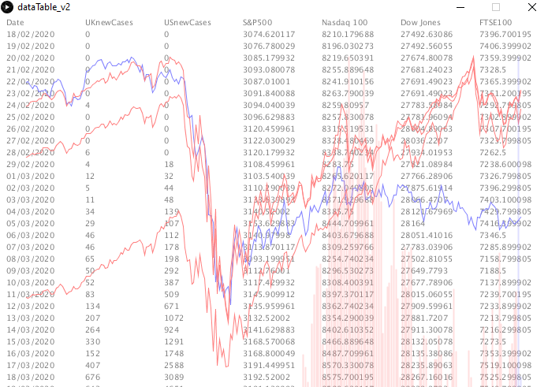
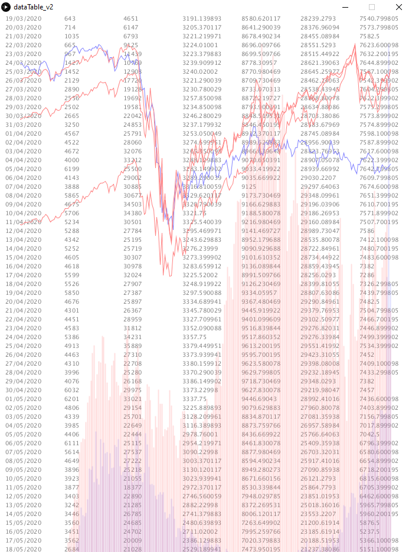

Michal KaszubskiTrading and speculation is what I'm interested in, I like to work out, eat and read and play the piano |
||
|
|
||
Bootcamp 2020: Data Analysis of Indexes and Covid-19 CasesThis is my first programming project in processing that concludes the 2 week boot camp at City. This project allowed me to explore various references such as "Table" along with a variety of for loops and nested for loops. I have created a sketch where financial data about major global indexes (S&P500,NASDAQ100,Dow Jones,FTSE100) is paired with new daily cases of Covid-19 that could determine an uptrend or downtrend on the financial markets. When the sketch is opened, you are greeted with a variety of data, to perform analysis based on the market you want to invest on and the current coronavirus situation. How you choose to use this information is your choice, the data is all conveniently placed in one spot to accurately display the daily values of previous index prices and covid cases where sometimes seconds could determine a successful trade execution.Special thanks to Jason Dykes for helping out with the graphs. Check out the code on Github: https://github.com/MKaszubski/adbs919/ | ||
|   | ||